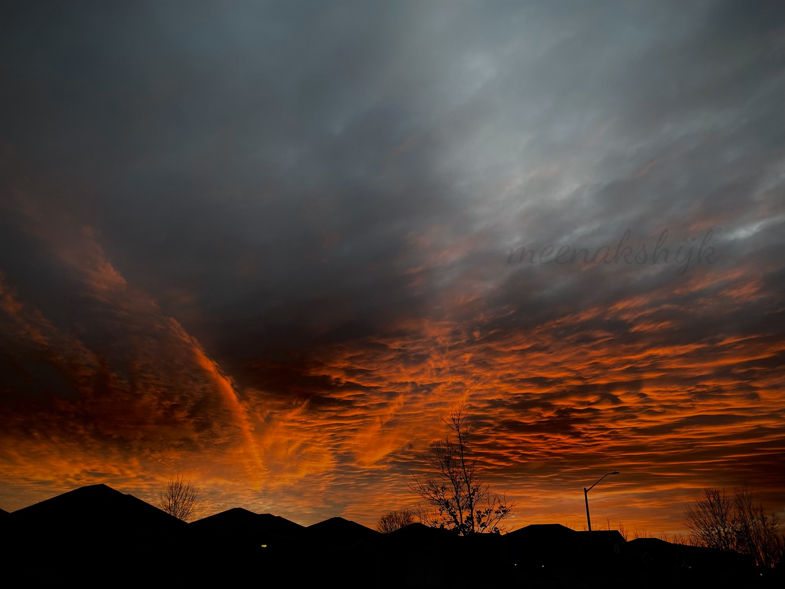

Spring is here! #Spring2023
Soaking in the sun
When the sun got stuck in the branches!
Spring is right around the corner :)
The wait.

Flames.
Eat the rainbow.
Reflections.
Chilled.
My very own snow kid ^_^
One down in the bucket list
Snow garden #Winter2022
Book, snow, journey.
The woods - creepy yet consoling.
Nowhere to hide
The last of Fall
Windowed by the leaves
Growing gold
Can't get enough of these colors!
Let go!

Fall 2022

The Fall! #Fall2022
From the other side
Companion 2.0 ^_^
End of the world
Proof that wrong steps can also end beautifully
Stepping into your sandals
Ready to fly
In a long distance relationship with the moon
Discoveries
Do you see a dog?
Blue skies
Dracaris
Just some backyard sightings

As wild as it can get
Blur more!
Blur!
Companion ^_^
Winged
On cloud 9, 10, 11 & 12!
Trivandrum, my love!
The Himalayas
Caught red(-orange-yellow-green-blue-indigo-violet) handed!
Reflections can be deceptive!
Foggy mornings
An intersection of nature and civilisation
My karmabhoomi
Indian railway's very own 40" TV
Do parallels meet?
Right across the lake
Symmetry
Location: Sree Padmanabha Temple, Trivandrum, Kerala, India